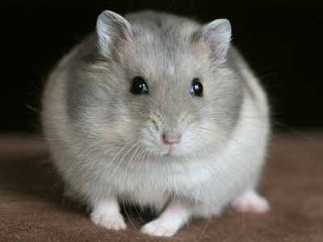

Hamsters are rodents (order Rodentia) belonging to the subfamily Cricetinae, which contains 19 species classified in seven genera. They have become established as popular small house pets. The best-known species of hamster is the golden or Syrian hamster (Mesocricetus auratus), which is the type most commonly kept as pets. Other hamster species commonly kept as pets are the three species of dwarf hamster, Campbell's dwarf hamster (Phodopus campbelli), the winter white dwarf hamster (Phodopus sungorus) and the Roborovski hamster (Phodopus roborovskii).
Hamsters are more crepuscular than nocturnal and, in the wild, remain underground during the day to avoid being caught by predators. They feed primarily on seeds, fruits, and vegetation, and will occasionally eat burrowing insects.
